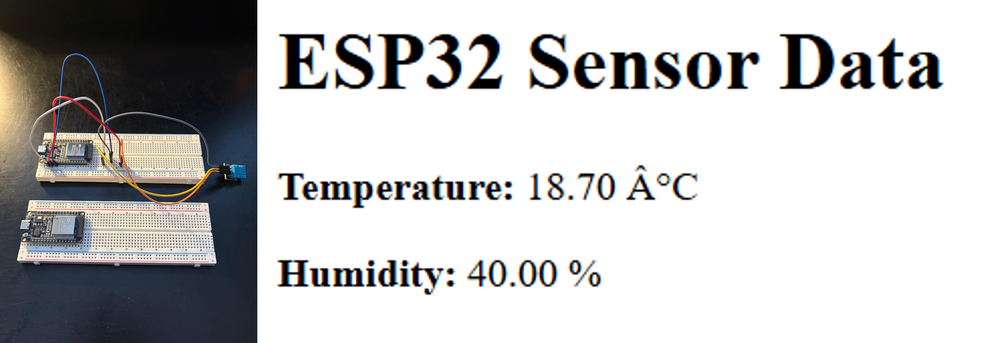

Distributed Weather Station

Description:
This project demonstrates a distributed sensor network using two ESP32 microcontrollers and a DHT11 temperature and humidity sensor. The system includes a Sensor Node that collects environmental data and sends it to a Base Station via Wi-Fi. The Base Station hosts a web server to display the received data in real-time.
Technologies:
- C++
- 2 x ESP32 Microcontrollers
- 1 x DHT11 temperature and humidity sensor
- Hardware wiring components